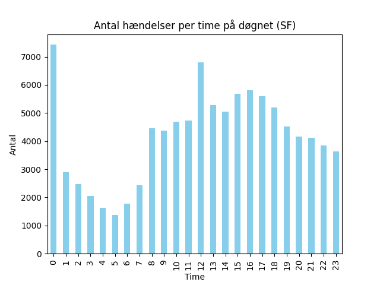
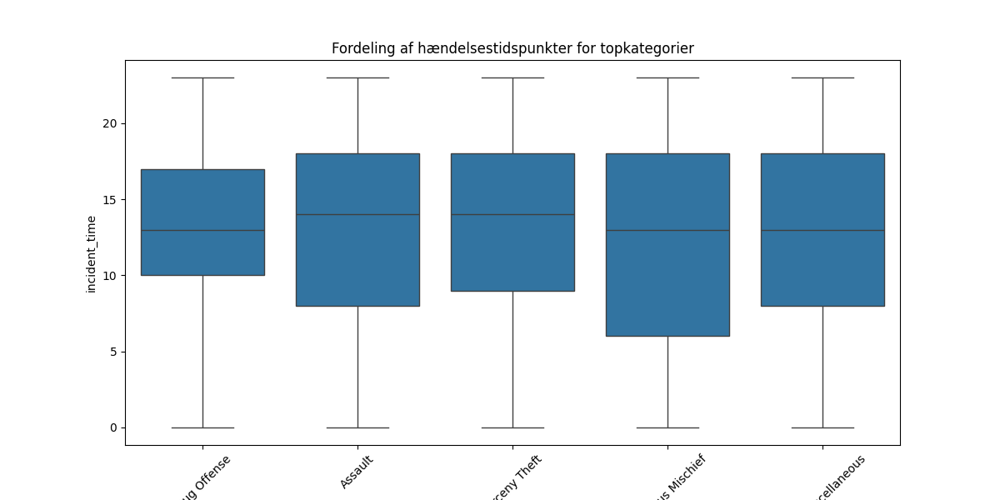
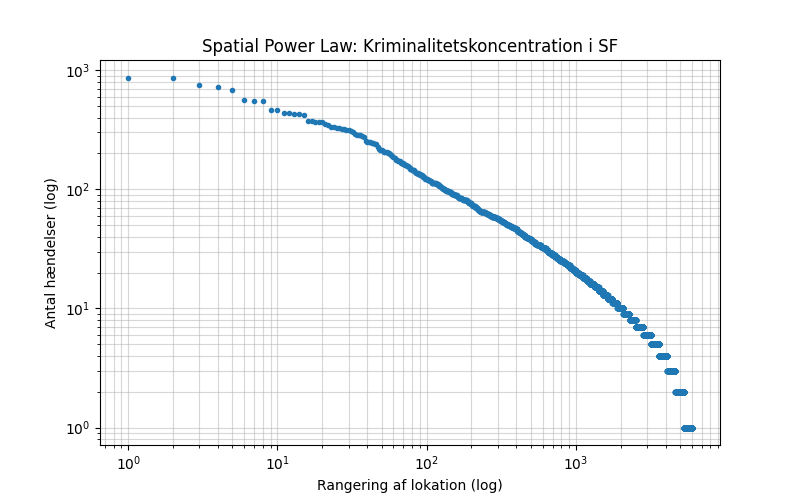
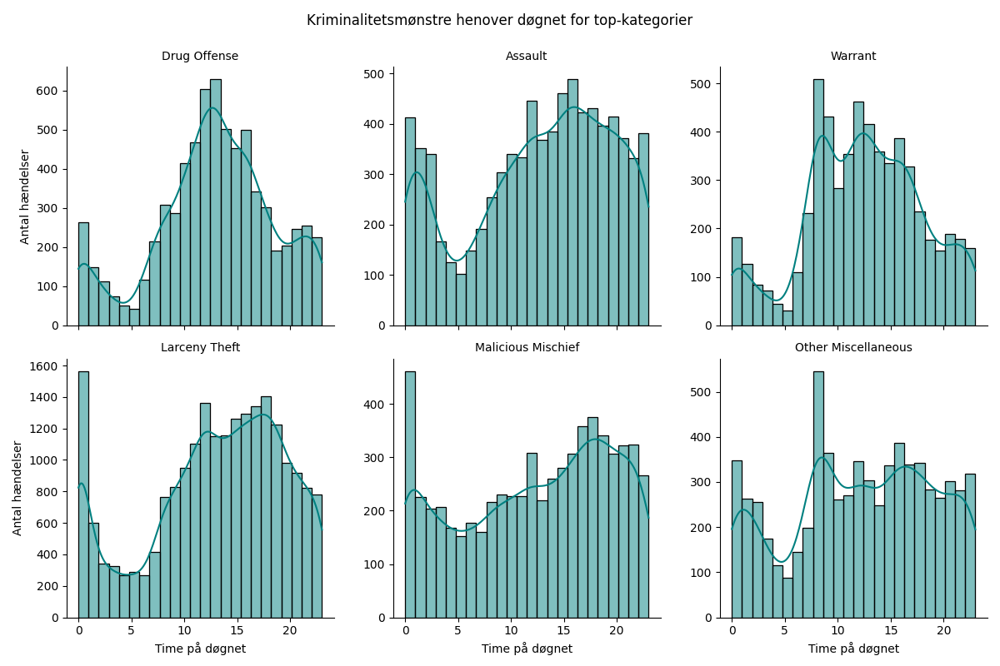

1.1 Temporal Overview
Assignment 1.1Annual incident counts for focus crimes across the full 2003–2025 period, revealing long-term trends, the COVID dip, and an anomalous 2025 spike.
yearly_trends = df_focus.groupby(['year', 'category']).size().unstack()
plt.figure(figsize=(10, 5))
yearly_trends.plot(ax=plt.gca(), marker='o', markersize=4, linewidth=1.5)
plt.title('Crime Trends in SF (2003–2025)', fontsize=16)
plt.ylabel('Annual Incidents')
plt.xlabel('Year')
plt.grid(True, which='both', linestyle='--', alpha=0.5)
plt.legend(title='Focus Crimes', bbox_to_anchor=(1.05, 1), loc='upper left')
plt.tight_layout()
plt.savefig('week1.png')
plt.show()
Feature 2 — COVID-19 impact (2020): Most crime types show a significant drop during 2020, correlating with city-wide lockdowns reducing street-level opportunities for crimes like Robbery and Assault.
Feature 3 — The 2025 spike: A sudden spike across almost all categories in 2025. This may reflect a change in reporting practices or a batch of backlogged data being integrated into the API.
1.2 Crime Profiles by Police District
Assignment 1.2For each district, we compute the over-representation ratio r = P(crime | district) / P(crime). Values above 1 indicate the crime is more common there than city-wide.
total_incidents = len(df_total)
global_counts = df_total['category'].value_counts()
districts = [d for d in df_total['district'].unique()
if d not in ['NAN', 'OUT OF SF', 'UNKNOWN']]
ratios = []
for dist in districts:
d_df = df_total[df_total['district'] == dist]
d_total = len(d_df)
res = {'District': dist}
for crime in my_focus_crimes:
p_dist = len(d_df[d_df['category'] == crime]) / d_total
p_glob = global_counts.get(crime, 0) / total_incidents
res[crime] = p_dist / p_glob if p_glob > 0 else 0
ratios.append(res)
df_heatmap = pd.DataFrame(ratios).set_index('District')
plt.figure(figsize=(8, 5))
sns.heatmap(df_heatmap, annot=True, fmt=".1f", cmap='YlOrRd',
cbar_kws={'label': 'Over-representation Ratio'})
plt.title('District Crime Profiles (Relative to City Average)', fontsize=16)
plt.tight_layout()
plt.show()
1.3 Visualizing Distributions
Assignment 1.3Three complementary views of how incident data is distributed: a jitter plot revealing recording precision, a QQ-plot testing normality of geographic spread, and violin plots of time-of-day.
# Part A: Jitter — recording precision
subset_j = df_focus[
(df_focus['category'] == 'assault') &
(df_focus['hour'] == 13)
].copy()
subset_j['minut'] = pd.to_datetime(subset_j['time']).dt.minute
plt.figure(figsize=(10, 3))
sns.stripplot(x=subset_j['minut'], jitter=0.4, alpha=0.3, color='blue')
plt.title('Jitter Plot: Rapporterings-præcision (Assault kl. 13)')
plt.show()
# Part C: Violin plots — time of day per crime type
plt.figure(figsize=(12, 6))
sns.violinplot(data=df_focus, x='category', y='hour',
inner="quartile", palette="muted")
plt.title('Hourly Distribution per Crime (Violin Plot)')
plt.xticks(rotation=45)
plt.tight_layout()
plt.show()
Part B — QQ-plot: An S-shaped deviation from the reference line indicates that crime latitude is not normally distributed — instead clustered in specific latitudinal bands (specific neighborhoods).
Part C — Violin plots: Fraud peaks during business hours; Robbery and Assault spread into late night. The midnight wrap-around problem causes a visual gap at 0/23 that misrepresents continuous nighttime patterns.
1.4 Spatial Power Law
Assignment 1.4Is crime spread evenly across the city, or concentrated in a few hotspots? A log-log plot of location rankings answers the question.
location_counts = df_total.groupby(
['latitude','longitude']
).size().sort_values(ascending=False)
plt.figure(figsize=(8, 5))
plt.loglog(
np.arange(len(location_counts)) + 1,
location_counts.values,
marker='.', linestyle='none'
)
plt.title('Spatial Power Law: Kriminalitetskoncentration i SF')
plt.xlabel('Rangering af lokation (log)')
plt.ylabel('Antal hændelser (log)')
plt.grid(True, which="both", ls="-", alpha=0.5)
plt.savefig('week4.png')
plt.show()1.5 Regression and Correlation
Assignment 1.5Which crimes share the same weekly rhythm? We compare 168-hour weekly profiles across four focus crimes using closed-form linear regression and R².
df_total['day'] = df_total['date'].dt.dayofweek
df_total['week_hour'] = df_total['day'] * 24 + df_total['hour']
crimes_4 = ['assault', 'burglary', 'robbery', 'vandalism']
matrix_data = {
c: df_total[df_total['category'] == c]
.groupby('week_hour').size()
.reindex(range(168), fill_value=0).values
for c in crimes_4
}
fig, axes = plt.subplots(4, 4, figsize=(8, 8))
for i, c1 in enumerate(crimes_4):
for j, c2 in enumerate(crimes_4):
ax = axes[i, j]
x, y = matrix_data[c1], matrix_data[c2]
# Closed-form regression (from course equations)
x_m, y_m = np.mean(x), np.mean(y)
b1 = np.sum((x - x_m) * (y - y_m)) / np.sum((x - x_m)**2)
b0 = y_m - b1 * x_m
ax.scatter(x, y, s=10, alpha=0.4)
ax.plot(x, b0 + b1 * x, 'r-', lw=1)
ax.set_title(f"R = {np.corrcoef(x, y)[0,1]:.2f}", fontsize=8)
if i == 3: ax.set_xlabel(c2, fontsize=7)
if j == 0: ax.set_ylabel(c1, fontsize=7)
plt.suptitle('Weekly Rhythm Correlations', fontsize=11)
plt.tight_layout()
plt.savefig('week4(1).png')
plt.show().png)
Least correlated: Burglary and Vandalism show weaker correlation — Burglary tends toward daytime weekday patterns (targeting unoccupied homes/offices) while Vandalism peaks at night and on weekends.
Data: SFPD Incident Reports 2003–present, via SF OpenData API
(wg3w-h783 + tmnf-yvry), 50,000 rows each.
Analysis: Python (pandas, numpy, matplotlib, seaborn, scipy).
Course: 02806 Social Data Analysis and Visualization, DTU, Spring 2026.